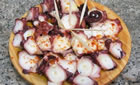
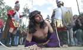
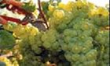
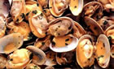

|
 |
 |
 |
| CASA RURAL |  |
LOCALIZACIÓN | |
CONTACTAR | MONASTERIO | GOLF | |
RUTAS | |
PLAYAS | |
FIESTAS | |
|
|
|
FIESTAS: CONCELLO DE MEIS El campo gastronómico del municipio empieza a ser cuidado con un mimo especial. Los turistas y visitantes que acuden a este ayuntamiento obtienen una cuidada respuesta culinaria, ya que la calidad de sus carnes, apreciadas en toda Galicia, y la exquisitez de los productos del campo que aquí se cultivan dan como resultado la notable oferta presentada en los restaurantes, pensiones y demás infraestructuras hosteleras de la zona. Los vinos destacan por su calidad sobre todo los albariños y los caíños. En cuanto a los primeros su fama y prestigio se ven avalados por la denominación de origen Rías Baixas, y en lo referente a los segundos la invitación se hace a las mentes abiertas, aquellas que saben apreciar la elaboración de un vino tradicional. La feria y el mercado de ganado que se realizan el 2º y 4º sábado de cada mes en el lugar de O Mosteiro, la capital del Concello, manifiestan de forma clara una rica economía agrícola. En la actualidad esta feria sigue siendo una de las más importantes de la provincia. Las fiestas del municipio se caracterizan por su variedad y elevado número. Las principales se concentran en el entorno de la Semana Santa. Durante esta semana se realiza en Paradela, desde el siglo XVIII, una representación de la Pasión por los habitantes de la parroquia, que está adquiriendo una gran notoriedad en los últimos años. El Lunes de Pascua se lleva a cabo en el monasterio de A Armenteira la "Romería das Cabezas", a la que acuden miles de romeros a pie para hacer el camino de peregrinación hacia el monasterio. El domingo siguiente se celebra en Paradela la fiesta de San Gregorio, donde se cuece un "bolo de Pascua", réplica gigante del que por esas fechas regalan los padrinos a sus ahijados, y que debe incluir tantos huevos como años hayan cumplido éstos. Ya en julio, se celebra en O Mosteiro la Romería de San Bieito - del 11 al 14 de julio. Dentro de estos actos, se lleva a cabo la popular "Festa dos Callos" el domingo más próximo al día 11 (San Benito). El 15 de agosto se celebra, también en O Mosteiro, la Feria Anual del Caballo y la fiesta de la Carne de Potro. Destacan los organizadores que esta carne que se consume es de animales criados en el monte, libremente, y que al no tomar piensos y alimentarse de flora silvestre, tienen una carne más sana y natural. Relación completa de fiestas en el concello de Meis - <clic aquí> FIESTAS: COMARCA DEL SALNÉS Entre las numerosas fiestas que se celebran en Sanxenxo cabe citar las patronales de la capital municipal (finales de agosto), en honor de San Ginés, y la de San Roque, a mediados de este mismo mes, en Portonovo. Entre las romerías se deben mencionar la de A Lanzada, el último sábado del mes de agosto en la ermita románica del siglo XIII, donde se entremezclan el culto a la Virgen con manifestaciones paganas de ritos primitivos que aún hoy perduran. Según esta tradición las mujeres, a media noche y al alba, toman "El baño de las nueve olas", que las debería curar de su presunta esterilidad, en unos casos, o del "meigallo" o "mal de ojo" en otros. Este rito se realiza para conseguir la fecundidad. Otra romería es la llamada "O luns do Con", tradicional subida al Monte Ventureira en la que los vecinos pasan un día de comida campestre. Visita obligada merece la Fiesta del Albariño en Cambados durante la primera semana de agosto. Desde 1953, el primer domingo de agosto, se celebra la tradicional Fiesta del Albariño en Cambados, es la segunda fiesta del vino más antigua de Galicia y del país, después de la de Jerez, y disfruta desde hace años del título de Interés turístico Nacional. Es un acontecimiento popular, donde el vino es el protagonista principal junto al gentío que, durante cinco días, recorre de forma incansable las casetas degustando el exquisito vino de esta región. Esta fiesta convoca cada año a miles de personas (más de 150.000 en la última edición) puede decirse que la cita de Cambados es de las más importantes de la comunidad gallega. En Vilagarcía de Arousa son destacables las Fiestas Patronales de San Roque. Se celebran la semana del 16 de agosto y duran en torno a unos diez días. Se trata de la semana grande en las fiestas de Vilagarcía en las que se pueden encontrar todo tipo de actuaciones, desde pasacalles a obras de teatro, pasando por verbenas y conciertos en las que actúan los grupos más actuales del momento. Estas fiestas, incluida la fiesta del agua, están reconocidas como fiestas de Interés Turístico Nacional. Aunque cada año las fiestas de San Roque nos ofrecen algo nuevo, cabe destacar los actos principales que son la procesión del Patrón, muy concurrida, la batalla de flores o carrozas y el tradicional combate naval, que se celebra a las 12 de la noche y que constituye un magnífico espectáculo de fuegos artificiales, luz y sonido. La Fiesta del Marisco en O Grove es una de las fiestas gastronómicas mas importantes de Galicia. Se suele celebrar en la primera semana de octubre. La idea de promocionar estas tierras a través de sus pilares básicos (la pesca y el turismo), llevó en 1963 a iniciar una fiesta dedicada a la exaltación del marisco. Lo que comenzó siendo una modesta fiesta cobró un espectacular auge a finales de la década de los ochenta. Así, se fueron incrementando, ya no sólo las actividades folclóricas y promocionales, sino que el programa se amplió de tal manera que la fiesta ha llegado a ser declarada de Interés Turístico Nacional. Actualmente, la fiesta comprende nueve días en los que se abren al público diferentes stands de venta de marisco a un precio de promoción, así como la carpa de exposición. La música también juega uno de los papeles más importantes, hasta tal punto que se celebra una muestra de folclore galaico-portugués. De igual manera, el programa deja hueco para el Simposium Internacional de Escultura al Aire Libre. El acto central de la fiesta consiste en una variada oferta gastronómica de mariscos de la ría (ostras, mejillones, berberechos. navajas, almejas, langostinos, vieiras, camarones, nécoras, cangrejo real, cigalas, percebes) además de rodaballo, pulpo y arroz de mariscos, que pueden degustarse todos los días en el recinto ferial a un precio moderado. El recinto ferial se encuentra en la zona portuaria de O Grove, al borde de la ría de Arosa. CALENDARIO DE FIESTAS: Semana Santa
Fuentes: • www.concellodemeis.com • www.sanxenxotur.com • www.turvilagarcia.com • www.casasmeigas.com • www.turgalicia.es • www.galiciaenfiestas.es |
| Casa rural | Localización | Contactar | Monasterio | Club de golf | Rutas | Playas | Fiestas |